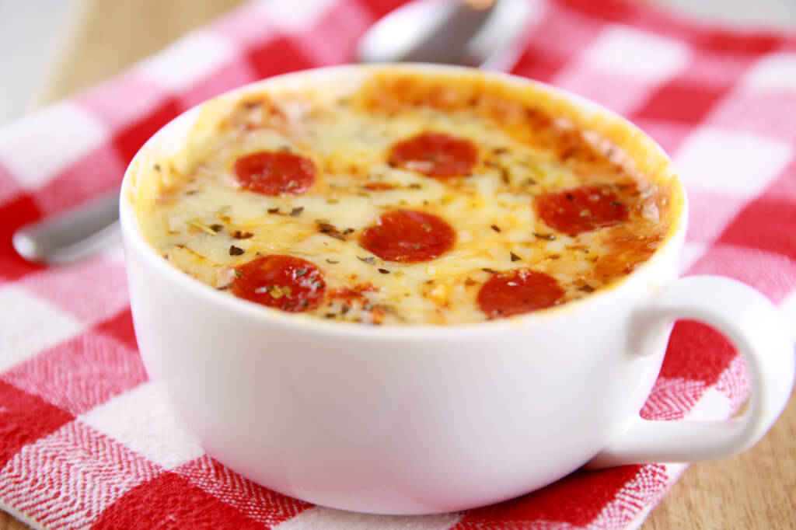

Mug Pizza
Time: 6 minutes
Cost: $12.00
Servings: 1

Ingredients
4 tablespoons all purpose flour
⅛ teaspoon baking powder
1/16 teaspoon baking soda
⅛ teaspoon salt
3 tablespoons milk
1 tablespoon olive oil
1 tablespoon marinara sauce
1 generous tablespoon shredded mozzarella cheese
5 mini pepperoni
½ teaspoon dried Italian herbs (basil or oregano will work)
Instructions
1. Mix the flour, baking powder, baking soda and salt together in a microwavable mug.
2. Add in the milk and oil with mix together. There might be some lump but that is ok.
3. Spoon on the marinara sauce and spread it around the surface of the batter.
4. Sprinkle on the cheese, pepperoni and dried herbs.
5. Microwave for 1 minute 10-20 seconds, or until it rises up and the topping are bubbling.
Source: https://www.biggerbolderbaking.com/microwave-mug-pizza/